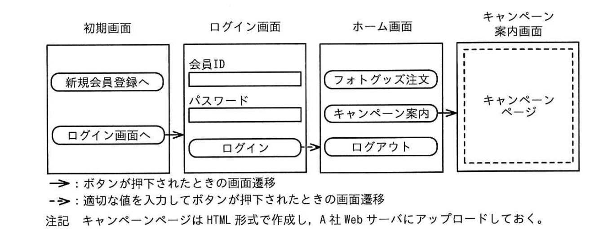
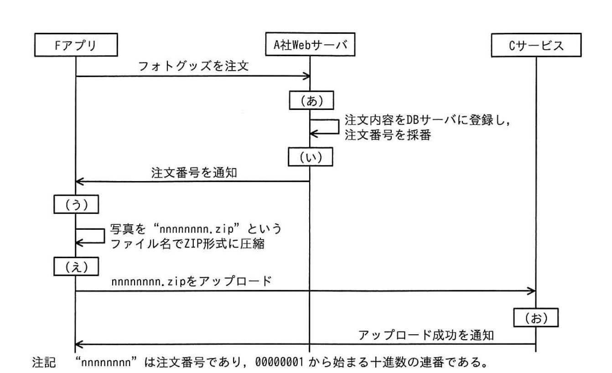

問3 スマートフォン用アプリケーションプログラムの開発
A社は、撮影機器の販売や写真のプリントサービスを全国に 200店舗で展開する従業員2,000名の企業である。実店舗の運営に加え、インターネットを介して撮影機器の販売を行う ECサイト事業を有している。このたび、会員がスマートフォン（以下、スマホという）用アプリケーションプログラム（以下、スマホ用アプリケーションプログラムをスマホアプリという）を通じて，写真入りのカレンダーなどのグッズ（以下，フォトグッズという）を注文できるサービス（以下，E サービスという）を新規に開始することになった。E サービス用スマホアプリ（以下、Fアプリという）は国内で流通する主要なスマホ OSである 0S-aとOS-Bの過去5年以内に正式リリースされたバージョンをサポートする。
[E サービスの説明] E サービスは、Fアプリとサーバサイドのシステム群で構成される。Fアプリは、インターネットを介してEサービス用 Webサーバ（以下、A社Web サーバといい、FQDNはwww.a-sha.co.jpとする）及び大手クラウドサービスプロバイダC社のクラウドストレージサービス（以下、Cサービスという）との間でHTTPSを使用して通信する。フォトグッズの作成に使う写真は、「アプリからCサービスにアップロードする。 Eサービスのネットワーク構成を図1に，機能概要を図2に、Fアプリの画面構成を図3に、フォトグッズの注文処理の流れを図4に、Cサービスの仕様を図5に示す。

図1 Eサービスのネットワーク構成（概要）
1．新規会員登録機能
Eサービスを利用するための新規会員登録を行う。
2.ログイン機能
会員IDとパスワードでログインする。ログインした会員には、認証トークン 1）が払い出され、ログアウトするまでの間、Fアプリに保存される。認証トークンは、A社 Web サーバ上で会員のセッションを識別するために使用する推測困難な値である。
3.フォトグッズ注文機能
Fアプリ上でフォトグッズを注文する。ログイン済み会員だけが利用できる。
なお、フォトグッズは、指定したA社の実店舗で受け取ることができる。
4.キャンペーン案内機能
キャンペーンの Web ページ（以下、キャンペーンページという）を表示する。ログイン済み会員だけが利用できる。
なお、キャンペーンに応募することによって、フォトグッズの割引などに利用可能なクーポンを入手できる。会員には、電子メール（以下、メールという）などを通じて、期間限定のキャンペーンを案内する。キャンペーンの内容は、2週間ごとに更新される。
注1）認証トークンは、ログイン後にFアプリがA社 WebサーバにHTTPリクエストを送する際、Authorization ヘッダーに指定される。

図3 Fアプリの画面構成（抜粋）

図4 フォトグッズの注文処理の流れ
1.サービスの概要
（1）Cサービスはマルチテナントのストレージサービスである。テナントの管理権限をもつ利用者（以下、管理者という）が作成したストレージに対し、テナントの作成したシステム（以下，利用システムという）からファイルのアップロードやダウンロード（以下、アップロード、ダウンロードを併せてファイル操作という）を行う。
（2）管理者は、ストレージの作成時に任意のストレージ名を設定する。ストレージを作成すると、Cサービスからアクセスキーが発行される。アクセスキーはストレージごとに異なる40字の英数字である。
（3）利用システムは、ストレージ上のファイルをURLのパスで指定する。例えば、ストレージ "●●●”上のファイル "▲▲▲”をファイル操作する際は、“/●●●/▲▲▲”を指定する。ファイルのアップロードにはHTTPのPUT メソッドを、ファイルのダウンロードにはGETメソッドを用いる。
（4）利用システムは、次の方式a又は方式bでファイル操作を行う。
2．方式a
（1）説明
アクセスキーをHTTPリクエストの Authorization ヘッダーに指定する方式である。利用システムは、Cサービスから発行されたアクセスキーを用いることによって、アクセスキーに対応するストレージに格納された全てのファイルに対するファイル操作が可能となる。
Authorization ヘッダーに正しいアクセスキーが指定されていない場合、ファイル操作は拒否される。
（2）使用例
アクセスキー “〇〇〇”を指定して、ストレージ "abc”上のファイル “xyで”をダウンロードする際に送信するHTTPリクエストの例を次に示す。
リクエストライン：GET /abc/xyz HTTP/1.1
ヘッダーフィールド：Host: storage.c-sha.jpAuthorization: Bearer 〇〇〇
3.方式b
（1）説明
有効期限（Expires）と署名値（Signature）をクエリパラメータとして付加した URL（以下，署名付き URLという）を用いて、特定のファイルに対するファイル操作を一時的に可能とする方式である。ここで、Expires パラメータに指定する有効期限はUNIX タイムスタンプ形式である。署名値の生成は次のように行う。
（i）GET又はPUTから始まり、パス中の "/●●●/▲▲▲？Expires=【有効期限】”で終わる文字列を署名対象文字列とする。
（ii）アクセスキーを秘密鍵とする。
（ii）署名対象文字列と秘密鍵から HMAC-SHA256 値を求める。
（i）（ii）で求めた値を base64urlエンコードする。
利用システムは、署名付き URLを生成し、ファイル操作を許可する利用者に伝える。伝えられた利用者は、署名付きURLを指定してHTTP リクエストを送ることによって、ファイル操作ができる。有効期限が切れた場合やサーバ側で署名値の検証が失敗した場合は、ファイル操作が拒否される。
（2）使用例
ストレージ “abc” 上のファイル"xyでをダウンロードする場合で、かつ、署名値が “▲▲▲”の場合のHTTP リクエストの例を次に示す。Xyzは、日本時間の2025年5月30日0時0分日秒，つまり UNIX タイムスタンプで1748530800までの間、ダウンロードが許可されている。
リクエストライン：GET /abc/xyz?Expires=1748530800&Signature=▲▲▲ HTTP/1.1
ヘッダーフィールド：Host: storage.c-sha.jp
Eサービスで使うCサービスのストレージ名は、e-serviceである。「アプリでは、方式aを利用する。アクセスキーは、鍵長 256ビットの共通鍵と AES-CBC アルゴリズムで暗号化し、Fアプリ内にリソースとして保存する。Cサービスのストレージ名並びに AES-CBC の共通鍵及び初期ベクトルは、Fアプリのコード中に定数として定義する。
[キャンペーン案内機能の実装方法］ Fアプリでのキャンペーンページの表示には、WebView という仕組みを用いる。 WebView は、スマホ OSの提供する仕組みであり、スマホアプリの画面の一部に Webページを表示させることができる。キャンペーンページのHTMLは、WebViewを用いて、Fアプリの画面上に表示させる。 会員に送るキャンペーン案内のメール本文中には、「アプリでキャンペーンページを表示するためのURL（以下、F-URL という）を含める。会員がメールアプリからFーURLを開くと、Fアプリが起動し，WebView 上にキャンペーンページが表示される。 キャンペーンページからキャンペーンに応募する際の会員のセッションの識別には、Fアプリに保存されている認証トークンを用いる。0S-αでは、キャンペーンページが表示された後に、WebView の機能によってキャンペーンページ上の ECMAScript コードがFアプリの getToken 関数を呼び出す。これによって、認証トークンがFアプリからキャンペーンページに引き渡される。OS-Bでは別の方式で同様の機能を実現する。キャンペーンページ上のECMAScript コードを図6に示す。
const token = f_app.getToken（）;
キャンペーンページ以外から getToken 関数を悪用されないように、getToken 関数の内部では、図7のように呼出し元のWebページのURLを確認する。

図7 getToken 関数の処理の流れ
F-URL の例を図8に示す。
f-app://campaign?url=https://www.a-sha.co.jp/campaign/□□□
注記1“f-app”はカスタム URLスキームである。 注記2 “□□□”はキャンペーンページのURLのパスである。
[F アプリの脆弱性診断結果]A社は、セキュリティ専門会社のD社に依頼して「アプリの脆弱性診断を実施した。 その結果、表1に示す弱性が検出された。
| 項番 | 脆弱性の概要 | 解説 |
|---|---|---|
| 1 | サーバ証明書の検証不備がある | Fアプリは、HTTPSでサーバと接続する際、サーバ証明書の検証エラーがあっても無視し、通信を続行する。そのため、HTTPSの内容が盗聴されたり、改ざんされたりするおそれがある。盗聴されると①盗聴した内容からアクセスキーとストレージ名を攻撃者が取得するおそれがある。 （省略） |
| 2 | CサービスのアクセスキーFの保護に不備がある | ②攻撃者がFアプリから平文のアクセスキーとストレージ名を取得できる。そのアクセスキーを用いて、③攻撃者がEサービスの全利用者の写真を不正にダウンロードするおそれがある。 （省略） |
| 3 | F-URLの処理にアクセス制御の不備がある | F-URLのurlクエリパラメータに、④細工したURLが指定されることによって、攻撃者のWebサイトにアクセスしてしまうおそれがある。また、攻撃者が会員の認証トークンを取得するおそれがある。 （省略） |
[脆弱性 1］ Fアプリの開発チームに所属するUさんは、D社のSさんが開催する診断結果報告会に参加した。 Uさんは，弱性1が作り込まれた経緯を説明した。Uさんによると、「アプリとA社Web サーバとの間の通内容に異常がないかどうかを調査するために、開発用PCで通信解析ツールを利用した。この通信解析ツールはプロキシサーバとして動作する。このツールを利用すると、Fアプリでは、サーバ証明書の検証エラーが発生し，FアプリとA社 Web サーバとの間の通が中断されてしまった。そこで，インターネット上のある記事でエラーが発生しても通信を続行する方法が紹介されていたのを
参考にして、Fアプリのコードを変更したということであった。 この通情解析ツールを利用し、“https://www.a-sha.co.jp/campaign/□□□”にアクセスした際のレイヤー4〜7の通信フローの例を図9に示す。

図9 通信解析ツールを利用した際の通フローの例（抜粋）
Uさんは，通解析ツールを利用してテストを行う際も通信を正常に続行させる方法をチーム内で話し合った。その結果、今後，開発用のスマホに⑥必要な設定を行うことにした。加えて、0S-aではテストを行う際だけその設定を有効化するように、Fアプリの中にも設定を追加した。
[脆弱性 2] 胎弱性 2への対応について、Sさんからは方式bを利用し、その際に署名付きURLの生成を図4中[i]の時点で行ってはどうかとの提案があった。UさんはSさんの提案を了承した。
[脆弱性 3] 次は、脆弱性3についてのりさんとSさんの会話である。
- Uさん
- 対策として、図7の処理を修正します。
- Sさん
- 図7の処理を修正すれば、認証トークンを盗まれるリスクは回避できます。 しかし、Webブラウザと比べると、⑦フィッシングサイトにアクセスしてしまっても気付くことができないという「アプリの仕様上の問題点が残ります。 フィッシングサイトに気付くことができるようにするための機能か、そもそもフィッシングサイトにアクセスできないようにする機能が必要です。
- Uさん
- はい。図7の処理の修正に加えて、⑧フィッシングサイトにアクセスできないようにする機能を実装します。
A社は，検出された弱性を修正し、Eサービスの提供を開始した。
設問1[F アプリの脆弱性診断結果]について答えよ。 （1） 表1中の下線①について、アクセスキーを取得する方法を、具体的に答えよ。 （2） 表1中の下線②について、アクセスキーを取得する方法を，具体的に答えよ。 （3） 表1中の下線③について、ダウンロードする方法を、具体的に答えよ。 （4） 表1中の下線④について、攻撃者のWeb サイトにアクセスさせることができるように細工したURL の例を、攻撃者が取得したドメイン名をk-sha.co.jpとした場合で答えよ。
設問2[施弱性1］について答えよ。 （1） 図9中の下線⑤について、サーバ証明書の Subject Alternat ive Name の値を、具体的に答えよ。 （2）図9中の[a]〜[h]入れる適切な字句を、解答群の中から選び、記号で答えよ。 解答群 ア Certificate イ Certificate Verify ウ Client Hello エ CONNECT O0O.000.000.000:443 HTTP/1.1 オ CONNECT www.a-sha.co.jp:443 HTTP/1.1 力 Finished キ GET /campaign/Oロロ HTTP/1.1 ク HTTP ステータスコード 101（Switching Protocols） ケ HTTP ステータスコード 200（OK） コ Server Hello （3） 本文中の下線⑥について、設定の内容を、具体的に答えよ。
設問3 本文中の[i]に入れる記号を、図4中の（あ）～（お）から選び、答えよ。
設問4[施弱性 3］について答えよ。 （1） 本文中の下線⑦について、問題点を、20字以内で答えよ。 （2） 本文中の下線⑧について、実装する機能を、具体的に答えよ。
問3 スマートフォン用アプリケーションプログラムの開発
設問1(1)
解答例
Cサービスに送られたHTTPリクエストのAuthorizationヘッダーからアクセスキーを取り出す
脆弱性1（サーバ証明書検証不備）を悪用した中間者攻撃（MITM）でアクセスキーを取得する手順を問う。FアプリはHTTPS証明書エラーを無視して通信継続するため、攻撃者はMITMプロキシ（Burp Suite等）をFアプリとCサービスの間に挟み込める。FアプリはCサービスへのファイル操作に方式a（「アクセスキーをAuthorizationヘッダーに指定」）を使用しており、TLSが復号された状態ではAuthorizationヘッダーが平文で見える。攻撃者はこのヘッダーから「Authorization: Bearer [アクセスキー]」を抽出できる。ストレージ名（URLパス中の「e-service」）も同時取得可能。得られたアクセスキーでCサービスの当該ストレージに格納された全ファイルにアクセスできる（方式aの仕様：「ストレージ全ファイルに対するファイル操作が可能」）。解答の核は「HTTPリクエストのAuthorizationヘッダーからアクセスキーを取り出す」という具体的な手順の記述。
設問1(2)
解答例
Fアプリを解析し、暗号化されたアクセスキー並びに共通鍵及び初期ベクトルを入手し、暗号化されたアクセスキーをAES-CBCで復号する
脆弱性2（アクセスキーの保護不備）を悪用してアプリから平文のアクセスキーを取得する手順を問う。FアプリはアクセスキーをAES-CBC（256bit）で暗号化してリソースとして保存しているが、暗号化に使う「共通鍵とIV（初期ベクトル）」はFアプリのコード中に定数として定義されている（本文）。攻撃手順：①FアプリのAPKファイルを入手→②逆コンパイルツール（jadx・apktool等）で解析→③コードから定数として定義された共通鍵・IVを抽出→④同じくリソースから暗号化済みアクセスキーを取得→⑤AES-CBCで復号して平文のアクセスキーを得る。「アプリに秘密情報をハードコードする」設計はOWASP Mobile Top10のM1（Improper Credential Usage）に該当するアンチパターン。正しい設計はアクセスキーをサーバ側で管理し、方式b（署名付きURL）をFアプリに発行する形式にすること。
設問1(3)
解答例
ファイル名に含まれる注文番号を00000001から順に増やしてダウンロードを試行する
攻撃者がアクセスキーを入手した後、Eサービスの全利用者の写真を不正ダウンロードする具体的手法を問う。Cサービスの仕様（図5）より方式aは「アクセスキーに対応するストレージ（e-service）に格納された全ファイルに対するファイル操作が可能」。全利用者の写真ファイルのパス命名規則が予測可能（注文番号ベースの連番）であれば、GETリクエストのパスに連番を試行するだけで全利用者の写真を順次ダウンロードできる。これはIDOR（Insecure Direct Object Reference）の典型パターンで、アクセス制御がストレージレベルで行われており個別ファイルレベルの認可チェックがない設計が問題。CVSS AC:Lowとなる理由も「推測可能なIDを順番に試すだけで攻撃成立」という点から明確。解答は「ファイル名に含まれる注文番号を順に増やしてダウンロードを試行する」という手順の記述。
設問1(4)
解答例
https://www.a-sha.co.jp.k-sha.co.jp/
https://www.a-sha.co.jp@k-sha.co.jp/
https://k-sha.co.jp/
F-URLのurlクエリパラメータに細工したURLを指定すると攻撃者サイトにアクセスしてしまう（脆弱性3）。認証トークン奪取につながる「細工したURL」の例3種：①https://www.a-sha.co.jp.k-sha.co.jp/：サブドメイン偽装。URLのホスト部分で「k-sha.co.jp」が実際のドメインであり、「www.a-sha.co.jp」はその前のラベルに過ぎない。②https://www.a-sha.co.jp@k-sha.co.jp/：@記号を利用した偽装。RFC 3986のURL仕様では@より前はユーザ情報（userinfo）として解釈されるため実際のホストは「k-sha.co.jp」。③https://k-sha.co.jp/：最も単純な外部URL。getToken関数のURLチェック（図7）が不十分な場合に有効。①②は正規ドメイン文字列を含む高度な偽装で、前方一致チェックのみでは①が「www.a-sha.co.jp」で始まるように見えるため通過してしまう点に注意。
設問2(1)
解答例
www.a-sha.co.jp
通信解析ツール（MITMプロキシ）が生成する偽サーバ証明書のSAN（Subject Alternative Name）に記載されているべきホスト名を問う。Fアプリが接続しようとするFQDNはA社WebサーバのFQDN「www.a-sha.co.jp」（本文に明記）。TLSの証明書検証では、接続先ホスト名がサーバ証明書のSANに含まれているか確認する。MITMプロキシはFアプリとの間で偽の証明書を使ってTLS接続を確立するため、そのSANに「www.a-sha.co.jp」が記載されていなければ証明書検証エラーとなる。通信解析ツールのCA証明書を開発用デバイスにインストールして信頼させた上で、そのCAを使ってSANにwww.a-sha.co.jpを含む証明書を動的発行することでMITMが成立する。脆弱性1（証明書検証スキップ）の根本原因は、まさにこのSAN検証を無視していたことにある。
設問2(2)
解答例
a＝オ b＝ケ c＝ウ d＝コ e＝ア f＝イ g＝カ h＝キ
図9（通信解析ツールを使ったHTTPS通信フロー）のシーケンス空欄補充問題。HTTPSプロキシ経由のTLS接続確立手順を理解する必要がある。手順：①FアプリがプロキシにHTTP CONNECTリクエスト送信（a＝オ）→②プロキシが「200 Connection Established」で応答（b＝ケ）→③TLSハンドシェイク開始：FアプリからClientHello（c＝ウ）→④プロキシからServerHello+Certificate（偽証明書を提示）（d＝コ）→⑤FアプリがCertificateVerify・Finished送信（e＝ア）→⑥プロキシからFinished返信でTLS確立（f＝イ）→⑦FアプリがHTTPリクエスト送信（g＝カ）→⑧プロキシがHTTPレスポンス返信（h＝キ）。プロキシはTLS平文を復号・傍受してから改めてA社WebサーバとTLS接続する。証明書検証が正常なら④でエラーとなるが、脆弱性1（検証スキップ）のため通過する。
設問2(3)
解答例
通信解析ツールのプライベート認証局のルート証明書をインストールし、信頼設定を行う
脆弱性1（証明書検証スキップ）を修正した後も通信解析ツールを使ってテストできるようにするための正規手順を答える問題。修正後はFアプリが正しくサーバ証明書を検証するため、自己署名のMITMプロキシ証明書は拒否される。解決策は「通信解析ツール（Burp Suite等）のCA（認証局）証明書を開発用デバイスの信頼された証明書ストアにインストールし、信頼設定を行う」こと。これでMITMプロキシが発行した証明書が当該CAによる正規の証明書として検証に通る。「OS-αではテストを行う際だけその設定を有効化する」という追加実装（本文）は、AndroidのNetwork Security Configなどを使って本番ビルドではユーザ証明書を信頼しない設定にすることを指す。本番アプリへのCA証明書インストールが不要になるため、リリース後のセキュリティが保たれる。
設問3
解答例
（い）
Certificate Pinning（証明書ピンニング）を実装する位置を問う問題。図4（証明書検証フロー）のどの分岐にピンニング処理を追加するかを選ぶ。Certificate Pinningとは、接続先サーバの証明書（または公開鍵）のハッシュをアプリに事前埋め込みし、実際の接続時に一致を確認する仕組み。正規CAが署名していてもピンニング値と一致しなければ接続を拒否できる。（い）が正解の理由：（い）は「証明書の公開鍵がピンニングされた公開鍵と一致するか」を検証する分岐に対応し、MITMプロキシの偽証明書はここで拒否される。（あ）を選ぶ誤りに注意：（あ）は「CA証明書の信頼確認」であり、CA証明書をデバイスにインストールしたMITMプロキシはここを通過してしまう。公開鍵ピンニング（HPKP）はCAへの信頼に依存しない強力な検証だが、証明書更新時のピン値更新が必要という運用上の注意点もある。
設問4(1)
解答例
URLを確認する手段がない
脆弱性3（F-URLのアクセス制御不備）で「利用者がキャンペーンページ表示前に遷移先URLの正当性を確認できない理由」を20字以内で答える問題。FアプリはF-URLのurlパラメータを検証せずにWebViewを起動するため、利用者はメールのF-URLをタップするとそのまま画面遷移してしまう。ブラウザと異なりWebViewはデフォルトでURLバー（アドレスバー）を表示しないため、利用者は現在表示されているページがどのURLにアクセスしているかを視認できない。「URLを確認する手段がない」が20字以内の答え。この問題の本質は「WebViewのUX上の制約によりユーザが自己防衛できない」ことであり、だからこそアプリ側でURLを検証する必要がある（設問4(2)の対策につながる）。
設問4(2)
解答例
WebViewを呼び出す前に、URLの先頭がhttps://www.a-sha.co.jp/であるかを検証する
脆弱性3（F-URLのurlパラメータのアクセス制御不備）に対するコードレベルの修正内容を答える問題。F-URL例（図8）では正規のキャンペーンページURLがurlパラメータに指定されるが、攻撃者はurlパラメータに任意のURLを入れてF-URLを作成できる。対策はWebView起動前にurlパラメータを検証し「https://www.a-sha.co.jp/」から始まるURLのみを許可（許可リスト方式）すること。解答の核は「WebViewを呼び出す前に、URLの先頭がhttps://www.a-sha.co.jp/であるかを検証する」という処理の追加。注意点：スラッシュを含む前方一致（「https://www.a-sha.co.jp/」）にすることで「https://www.a-sha.co.jp.evil.com/」のようなサブドメイン偽装を防ぐ。検証失敗時はWebViewを起動しないか外部ブラウザで開くかの対応も必要。